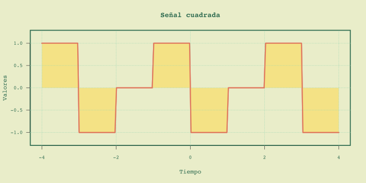
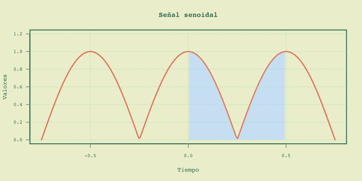

Telecomunicaciones
Series de Fourier
Dr. Julio César Ramírez-Pacheco
Presentación en: https://monoxide2000.github.io/slidesOPOSICION/
Contenido
- Señales periódicas
- Propiedades de ortogonalidad de las funciones trigonométricas
- Serie trigonométrica de Fourier
Señales periódicas
Una función, $f(t)$, definida para todo $t \in \mathbb{R}$ se dice que es periódica con período $T$ si:
$$
f(t) = f(t+ T)\; \; \forall t \in \mathbb{R}
$$
La constante mínima $T$ que satisface la ecuación de arriba se llama el período fundamental. De igual forma se cumple que $f(t) = f(t+nT)$ para cualquier entero $n\ne 0$.
Señales periódicas: características
Señales periódicas: características
Señales periódicas: características
Señales periódicas: cont.
- La suma, resta y multiplicación de funciones periódicas con período $T$ es periódica con período $T$.
- Si $f_1(t+T_1)=f_1(t)$ y $f_2(t+T_2)=f_2(t)$ entonces $f_1(t)\pm f_2(t)$ es periódica si $T_1/T_2$ es racional.
- $\int_{\alpha}^{\alpha+T}{f(t) \, dt} = \int_{\beta}^{\beta+ T}{f(t)\, dt}$.
Señales periódicas: $\int_{\beta}^{\beta+ T}{f(t)\, dt}$
Señales periódicas: $\int_{\beta}^{\beta+ T}{f(t)\, dt}$
Señales periódicas: $\int_{\beta}^{\beta+ T}{f(t)\, dt}$

Funciones ortogonales
Sea $\phi_1(t), \phi_2(t), \ldots \phi_k(t)$ un conjunto de funciones definidas en $(\alpha, \beta)$. Se dice que este conjunto es ortogonal si
para dos funciones $\phi_m$ y $\phi_n$ de este conjunto se cumple,
$$
\int_{\alpha}^{\beta}{\phi_m(t)\phi_n(t) \, dt}=
\begin{cases}
0 & \mbox{para}\, m\ne n\\
K_n & \mbox{para}\, m=n\\
\end{cases}
$$
Ortogonalidad: cont.
El conjunto de funciones trigonométricas; $1, \cos(\omega_0 t), \cos(2\omega_0 t), \ldots, \mbox{sen}(\omega_0 t), \mbox{sen}(2\omega_0 t), \ldots$ forman un conjunto ortogonal en $(0,T)$.
$\begin{align} \int_{-T/2}^{T/2}{\cos(m\omega_0 t)\cos(n\omega_0 t)\, dt} = & \begin{cases}0 & m\ne n\\ T/2 & m = n \end{cases}\\ \int_{-T/2}^{T/2}{\mbox{sen}(m\omega_0 t)\mbox{sen}(n\omega_0 t)\, dt} = & \begin{cases}0 & m\ne n\\ T/2 & m = n \end{cases}\\ \int_{-T/2}^{T/2}{\mbox{sen}(m\omega_0 t)\cos(n\omega_0 t)\, dt} = & 0\\ \end{align}$
Ortogonalidad: cont.
Para un conjunto ortogonal completo de funciones $\phi_1, \phi_2, \ldots, \phi_m, \ldots$ se cumple que:
$$ f(t) = \sum_{n=1}^{\infty}{f_n \phi_n(t)} $$
Serie de Fourier
Sea $f(t)$ una función periódica de período $T$ que cumple con las condiciones de Dirichlet. La serie de Fourier de $f(t)$ está dada por:
$$
f(t) = \frac{a_0}{2}+\sum_{n=1}^{\infty}{a_n \cos(n\omega_0 t)+b_n\mbox{sen}(n\omega_0 t)}
$$
donde $\omega_0 = 2\pi/T$ y $a_0$, $a_n$ y $b_n$ son los coeficientes de Fourier.
Serie de Fourier: definición 2
Sea $f(t)$ una función periódica de período $2\pi$ que cumple con las condiciones de Dirichlet. La serie de Fourier de $f(t)$ está dada por:
$$
f(t)= \frac{a_0}{2}+\sum_{n=1}^{\infty}{a_n \cos(n t)+b_n\mbox{sen}(n t)}
$$
donde $a_0$, $a_n$ y $b_n$ son los coeficientes de Fourier.
Serie de Fourier: definición 3
Sea $f(t)$ una función periódica de período $T$ que cumple con las condiciones de Dirichlet. La serie de Fourier de $f(t)$ está dada por:
$$
f(t)= \frac{a_0}{T} + \frac{2}{T}\times\sum_{n=1}^{\infty}{a_n \cos(n \omega_0 t)+b_n\mbox{sen}(n \omega_0 t)}
$$
donde $\omega_0 = 2\pi/T$ y $a_0$, $a_n$ y $b_n$ son los coeficientes de Fourier.
Efecto de: $a_0$, $a_n$ y $b_n$
Sea $T=2\pi$, $a_0=a_n=0$, $b_n=\frac{2}{n}(-1)^{n+1}$ y $n=30$
Efecto de: $a_0$, $a_n$ y $b_n$
Sea $T=2\pi$, $a_0=a_n=0$, $b_n=\frac{2}{\pi n}(1-(-1)^n)$ y $n=30$
Efecto de: $a_0$, $a_n$ y $b_n$
Sea $T=2\pi$, $a_0 =\frac{\pi^2}{3}$, $a_n=\frac{4(-1)^n}{n^2}$, $b_n=0$ y $n=2$
Serie de Fourier
- De los ejemplos anteriores es fácil ver que dependiendo de los valores de $a_0$, $a_n$ y $b_n$ podemos tener diferentes funciones.
- Darle valores a $a_0$, $a_n$ y $b_n$ es útil, sin embargo, el mayor poder de las series de Fourier es en conocer esos coeficientes para una función de período $T$
- Por consiguiente, ahora el interés es en hallar $a_0$, $a_n$ y $b_n$.
Coeficientes de Fourier
Sea $f(t)= \frac{a_0}{2}+\sum_{n=1}^{\infty}{\left\{a_n\cos(n\omega_0 t)+ b_n\mbox{sen}(n\omega_0 t)\right\}}$ la serie de Fourier de $f(t)$, entonces, $$ \begin{align} a_0 = & \frac{2}{T}\int_{-T/2}^{T/2}{f(t)\, dt}\\ a_n = & \frac{2}{T}\int_{-T/2}^{T/2}{f(t) \cos(n\omega_0 t)\, dt}\\ b_n = & \frac{2}{T}\int_{-T/2}^{T/2}{f(t) \mbox{sen}(n\omega_0 t)\, dt}\\ \end{align} $$
Ejemplos de coeficientes

Los coeficientes son; $a_0 = 2\pi$, $a_n=0$ y $b_n = \frac{-2}{n}$ y la serie:
$f(t) = \pi - 2\left(\mbox{sen}(t)+\frac{\mbox{sen}(2t)}{2}+ \frac{\mbox{sen}(3t)}{3} + \cdots \right)$
Ejemplos de coeficientes
$a_0 = 6$, $a_n= \frac{12}{n\pi}\mbox{sen}(n\pi/2)$ y $b_n = 0$ y la serie:
$f(t) = 3 + \frac{12}{n\pi} \left( \mbox{cos}(\pi t/2)-\frac{1}{3}\cos(3\pi t/2)+ \frac{1}{5}\cos(5\pi t/2) + \cdots \right)$
Condiciones de existencia
- $f(t)$ es una función univaluada de la variable $t$.
- La integral $\int_{t_0}^{t_0+T}|f(t)|\, dt < \infty$
- $f(t)$ tiene un número finito de discontinuidades en cualquier periodo.
- $f(t)$ tiene un número finito de máximos y mínimos en cualquier período.
Bibliografía
- Goldman, S. (1967). Frequency analysis, modulation and noise. Dover
- Hsu, H. P., Mehra, R., & Velasco Coba, F. (1987). Análisis de Fourier. Prentice Hall
- Hayt, W. H., Kemmerly, J. E., Durbin, S. M., & Philips, J. D. (2012). Análisis de circuitos en ingeniería. McGraw Hill.
- Proakis, J. G., & Salehi, M. (2007). Fundamentals of communication systems. Pearson Education.
Bibliografía
- Lathi, B. P., & Green, R. A. (2005). Linear systems and signals. New York: Oxford University Press.
- Ziemer, R. E., & Tranter, W. H. (2014). Principles of communications. John Wiley & Sons.
- ElAli, T., & Karim, M. A. (2018). Continuous signals and systems with Matlab. CRC Press.
- Papoulis, A. (1977). Signal analysis. McGraw-Hill.